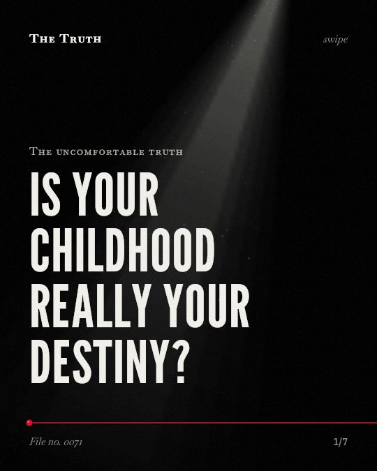

The uncomfortable truth
Is your childhood really your destiny?

Your infancy does not dictate your adult love.
In some cases, there is no continuity of attachment from infancy to adolescence. The evidence on this is mixed and depends on specific variables like genetics and time intervals.
Established. Several studies combined, or official data. The evidence is mixed.
What the research found
No continuity of attachment from infancy to adolescence was found in a longitudinal study of early adopted adolescents.
“Overall, no continuity of attachment from infancy to adolescence was found.”
Observational study, 2012. Beijersbergen et al., Developmental Psychology.
Infant attachment security is linked to the security of adults' general and romantic attachment representations only for individuals with the OXTR G/G genotype.
“Infant attachment security predicted the security of adults' general and romantic attachment representations only for individuals with the OXTR G/G genotype.”
Observational study, 2013. Raby et al., Journal of Child Psychology and Psychiatry.
Insecurely attached children who subsequently experienced high-sensitive mothering significantly outperformed secure children who subsequently experienced low-sensitive mothering in five developmental outcomes.
“Further planned comparisons of children with mixed attachment-sensitivity histories revealed that, in the case of all outcomes, insecurely attached children who subsequently experienced high-sensitive mothering significantly outperformed secure children who subsequently experienced low-sensitive mothering.”
Study, 2002. Belsky & Fearon, Attachment & Human Development.
Less maternal sensitive support in early childhood but more maternal sensitive support in adolescence predicted children's change from insecurity in infancy to security in adolescence.
“less maternal sensitive support in early childhood but more maternal sensitive support in adolescence predicted children's change from insecurity in infancy to security in adolescence.”
Observational study, 2012. Beijersbergen et al., Developmental Psychology.
The overall stability of attachment security between two time points is a medium-sized r = .39, but no significant stability was found in intervals larger than 15 years.
“An overall coefficient of r = .39 between times T1 and T2 was obtained, reflecting a medium-sized stability of attachment security. However, no significant stability was found in intervals larger than 15 years.”
Meta-analysis, 2012. Pinquart et al., Attachment & Human Development.
Attachment security is moderately stable across the first 19 years of life.
“Results indicate that attachment security is moderately stable across the first 19 years of life and that patterns of stability are best accounted for by prototype dynamics.”
Meta-analysis, 2002. Fraley, Personality and Social Psychology Review.
Stability fades over time.
Attachment security shows moderate stability over 19 years. However, no significant stability is found in intervals larger than 15 years. Later experiences and genetics also modify these patterns.
The past is not a life sentence.
That may be why your current relationships feel different from your childhood. High-sensitive mothering in adolescence can shift your security regardless of how you started.
This part is our reading of the evidence, not a finding.
The way you hold a partner's hand.
You sit on the sofa at night. You feel a sense of safety or distance. This feeling is not just a ghost of your first years.
The honest summary
The evidence shows that while early attachment patterns can persist, they are not strictly fixed and can be influenced by later caregiving, genetics, and time.
The findings are influenced by specific variables such as genetic genotypes, socioeconomic status, and the specific time intervals measured.
Who is raising you today?
Sources
- Robert Chris Fraley (2002). Attachment Stability From Infancy to Adulthood: Meta-Analysis and Dynamic Modeling of Developmental Mechanisms. Personality and Social Psychology Review. Meta-analysis, cited 1,065 times.
- Martin Pinquart, Christina Feußner, Lieselotte Ahnert (2012). Meta-analytic evidence for stability in attachments from infancy to early adulthood. Attachment & Human Development. Meta-analysis, cited 317 times.
- Kenneth Lee Raby, Dante Cicchetti, Elizabeth A. Carlson et al. (2013). Genetic contributions to continuity and change in attachment security: a prospective, longitudinal investigation from infancy to young adulthood. Journal of Child Psychology and Psychiatry. Observational study, cited 77 times.
- Jay Belsky, Pasco R. M. Fearon (2002). Early attachment security, subsequent maternal sensitivity, and later child development: Does continuity in development depend upon continuity of caregiving?. Attachment & Human Development. Study, cited 368 times.
- Mariëlle D. Beijersbergen, Femmie Juffer, Marian J. Bakermans‐Kranenburg et al. (2012). Remaining or becoming secure: Parental sensitive support predicts attachment continuity from infancy to adolescence in a longitudinal adoption study.. Developmental Psychology. Observational study, cited 167 times.
Also read for this file, not quoted
- Jacobsen et al. (2013). Attachment security in young foster children: continuity from 2 to 3 years of age.
This file was researched and drafted by software, then checked by rules a model cannot talk its way around: each quote above was matched word for word against the paper, and every number had to appear in it. How files are made.